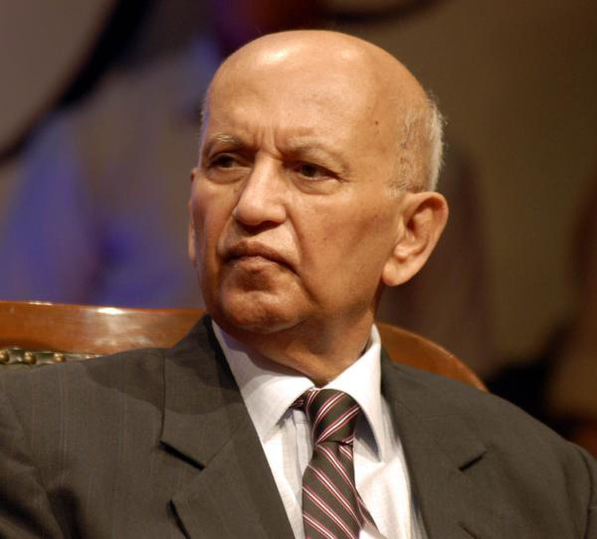
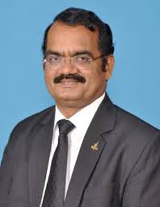

Dr. Vikram Sarabhai

Indian Physicist and astronomer
Father of Indian space program
Dr.Sarabhai is considered as the Father of the Indian space program; He was a great institution builder and established or helped to establish a large number of institutions in diverse fields...more
Dr. Udupi Ramachandra Rao
Internationaally renowned Space Scientist
Prof U R Rao was an internationally renowned space scientist who had made original contributions to the development of space technology in India and its extensive application to communications and remote sensing of natural resources...more
Dr. Satish Dhawan

Indian Rocket Scientist
Father of Experimental Fluid Dynamic Research
Prof. Satish Dhawan was an Indian rocket scientist who was born in Srinagar, India and educated in India and the United States...more
Dr. A. P. J. Abdul Kalam

Aerospace Engineer and 11th president of India
Missile Man of India
Dr. Avul Pakir Jainulabdeen Abdul Kalam, commonly known as Dr. APJ Abdul Kalam, was an iconic Indian scientist, aerospace engineer, and visionary leader...more
Dr. M. Annadurai
Indian Aerospace Engineer
Moon Man of India
Mylswamy Annadurai (born July 2, 1958, Kodhawady, Tamil Nadu, India) is an Indian aerospace engineer who held a number of posts with the Indian Space Research Organisation (ISRO), including the directorship (2015–18) of the U R Rao Satellite Centre (formerly the ISRO Satellite Centre)...more
Dr. P. Veeramuthuvel

Aerospace Engineer
Palanivel Veeramuthuvel (born 22 October 1976) is an Indian aerospace engineer who works for the Indian Space Research Organisation. He served as the project director of the Chandrayaan-3 mission...more